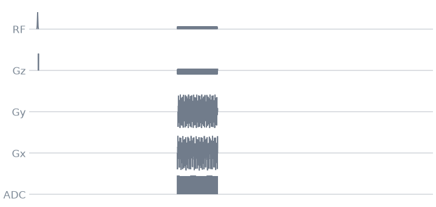
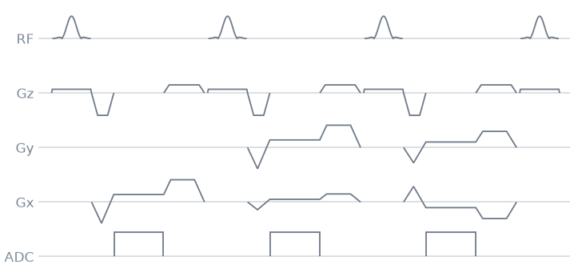
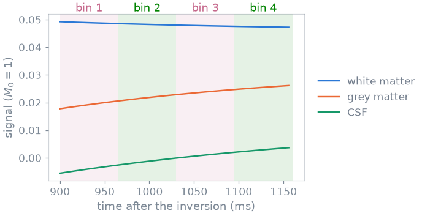

Note
Go to the end to download the full example code.
6. Radial MPRAGE#
MPRAGE is the T1-weighted 3D scan of almost every brain protocol. An inversion pulse flips the longitudinal magnetisation; while it recovers, at a speed set by each tissue’s T1, a fast train of gradient echoes reads it out; then the magnetisation recovers before the next inversion. White and grey matter recover at different speeds, and the train catches them while they differ.
In this lesson your radial gradient echo of lesson 5 becomes the readout train of a 3D MPRAGE, played as a stack of stars: the spokes are in-plane, and a phase encoding along z picks the partition. Radial sampling adds something a Cartesian MPRAGE does not have: every spoke passes through the centre of k-space, so every part of the train carries the contrast of its own moment, and the train can be split into several images of different contrast.
Learning objectives
Add an adiabatic inversion pulse and its crusher, and set the inversion time.
Turn the 2D radial readout into a stack of stars, with a partition encoding merged into the slab rephaser.
Play one train of golden-angle spokes per inversion, and label every readout with its spoke and partition.
See how the signal evolves along the train, and why golden-angle spokes let you reconstruct it as several contrasts.
Previous: 5. Radial sampling and gradient surgery. Next: 7. Hardware and safety checks, where you check your MPRAGE against the scanner’s limits.
Inversion-recovery train#
Each inversion is one period of the scan, and it plays, in order:
the inversion pulse, then a crusher that dephases whatever it left in the transverse plane;
a wait, so the first spoke comes at the inversion time (TI) after the inversion;
the train: one gradient echo per spoke, all in the same partition;
a recovery delay, until the next inversion.
Your protocol: a 220 mm field of view in-plane and a 128 matrix, 16 partitions of 5 mm, 64 spokes per inversion, TI 900 ms and an inversion every 2.5 s.
import numpy as np
import pypulseqpp as pp
from pypulseqpp import sequences
system = pp.Opts(
max_grad=32.0,
grad_unit="mT/m",
max_slew=130.0,
slew_unit="T/m/s",
rf_dead_time=100e-6,
rf_ringdown_time=20e-6,
adc_dead_time=10e-6,
)
FOV = 220e-3
MATRIX = 128
PARTITIONS = 16
PARTITION_THICKNESS = 5e-3
SPOKES_PER_TRAIN = 64
FLIP_ANGLE_DEG = 8.0
TI = 900e-3
T_INVERSION = 2.5
SLAB = PARTITIONS * PARTITION_THICKNESS
delta_k = 1 / FOV
delta_kz = 1 / SLAB
Inversion pulse#
An adiabatic pulse inverts the magnetisation uniformly even where the
transmit field is weak or strong, which a 180 degree sinc would not.
make_adiabatic_pulse() makes a hyperbolic secant, 10 ms
long. use="inversion" tells the scanner and the checks what it is.
The crusher after it is the spoiler of lesson 3, along z.
rf_inv = pp.make_adiabatic_pulse(
pulse_type="hypsec",
duration=10e-3,
bandwidth=40e3,
adiabaticity=4,
delay=system.rf_dead_time,
use="inversion",
system=system,
)
gz_crush = pp.make_crusher(4.0, PARTITION_THICKNESS, channel="z", system=system)[0]
Readout train#
The excitation now selects the whole slab, and the readout is the merged radial readout of lesson 5.
rf, gz, gz_reph = pp.make_sinc_pulse(
flip_angle=np.deg2rad(FLIP_ANGLE_DEG),
duration=1e-3,
slice_thickness=SLAB,
apodization=0.5,
time_bw_product=4.0,
delay=system.rf_dead_time,
system=system,
use="excitation",
return_gz=True,
)
dwell, readout_time = pp.calc_adc_timing(
MATRIX,
10e-6,
grad_raster_time=system.grad_raster_time,
adc_raster_time=system.adc_raster_time,
)
raster = system.grad_raster_time
plateau = readout_time + raster * np.ceil(2 * system.adc_dead_time / raster)
G = MATRIX * delta_k / readout_time
_, times, amplitudes = pp.make_extended_trapezoid_area(
channel="x", grad_start=0.0, grad_end=G, area=-G * plateau / 2, system=system
)
plateau_start = times[-1]
g_read = pp.make_extended_trapezoid(
"x",
times=np.append(times, plateau_start + plateau),
amplitudes=np.append(amplitudes, G),
system=system,
)
adc = pp.make_adc(
MATRIX,
dwell=dwell,
delay=plateau_start + (plateau - readout_time) / 2,
system=system,
)
g_spoil, _, _ = pp.make_extended_trapezoid_area(
channel="x", grad_start=G, grad_end=0.0, area=2 * MATRIX * delta_k, system=system
)
Stack of stars#
Each partition \(p\) sits at \(k_z = (p - P/2)\,\Delta k_z\). The partition encoding plays on z while the prewinder plays on x and y, in the same block as the slab rephaser, and a block holds one gradient per channel. So you design one z gradient per partition that does both: the rephaser’s area plus the partition’s \(k_z\), as long as the prewinder. After the readout, a z gradient in the spoiler block brings \(k_z\) back to zero.
These are 16 different gradients, and you still design them before the loop, once each.
kz = (np.arange(PARTITIONS) - PARTITIONS // 2) * delta_kz
gz_encode = [
pp.make_trapezoid("z", area=gz_reph.area + k, duration=plateau_start, system=system)
for k in kz
]
gz_rewind = [
pp.make_trapezoid("z", area=-k, duration=pp.calc_duration(g_spoil), system=system)
for k in kz
]
Inversion time#
TI runs from the centre of the inversion pulse to the centre of the first excitation. What lies between them is the rest of the inversion block, the crusher and the start of the excitation block; the wait block makes up the difference.
inversion_to_end = pp.calc_duration(rf_inv) - (
rf_inv.delay + pp.calc_rf_center(rf_inv)[0]
)
start_to_excitation = rf.delay + pp.calc_rf_center(rf)[0]
ti_wait = pp.round_to_raster(
TI - inversion_to_end - pp.calc_duration(gz_crush) - start_to_excitation,
system.block_duration_raster,
)
spoke_tr = (
pp.calc_duration(rf, gz)
+ pp.calc_duration(g_read, adc, gz_encode[0])
+ pp.calc_duration(g_spoil, gz_rewind[0])
)
train = SPOKES_PER_TRAIN * spoke_tr
played = pp.calc_duration(rf_inv) + pp.calc_duration(gz_crush) + ti_wait + train
recovery = pp.round_to_raster(T_INVERSION - played, system.block_duration_raster)
print(
f"spoke TR {1e3 * spoke_tr:.2f} ms, train {1e3 * train:.0f} ms, "
f"recovery {1e3 * recovery:.0f} ms"
)
spoke TR 4.06 ms, train 260 ms, recovery 1336 ms
Scan loop#
One inversion per partition. The spokes keep advancing by the golden angle
across the whole scan, not only within a train, so every partition gets its
own set of angles and together they fill the plane evenly. The labels say
which spoke (LIN) and which partition (PAR) each readout is, and RF
spoiling runs as in lesson 3.
GOLDEN_ANGLE = np.pi * (3 - np.sqrt(5)) / 2
seq = pp.Sequence(system)
labels = sequences.Labels()
n = 0
for partition in range(PARTITIONS):
seq.add_block(rf_inv)
seq.add_block(gz_crush)
seq.add_block(pp.make_delay(ti_wait))
for spoke in range(SPOKES_PER_TRAIN):
angle = (n * GOLDEN_ANGLE) % np.pi
phase = (np.deg2rad(117.0) * spoke * (spoke + 1) / 2) % (2 * np.pi)
rf.phase_offset = adc.phase_offset = phase
seq.add_block(rf, gz, *labels(LIN=spoke, PAR=partition))
seq.add_block(
*pp.rotate(g_read, angle=angle, axis="z"), adc, gz_encode[partition]
)
seq.add_block(*pp.rotate(g_spoil, angle=angle, axis="z"), gz_rewind[partition])
n += 1
seq.add_block(pp.make_delay(recovery))
seq.set_definition("Name", "radial_mprage")
seq.set_definition("FOV", [FOV, FOV, SLAB])
seq.set_definition("TI", TI)
ok, errors = seq.check_timing()
print(f"timing ok: {ok}, scan time {seq.duration()[0]:.1f} s")
timing ok: True, scan time 40.0 s
One inversion period, drawn over 2.5 s: the inversion, the wait, the train, the recovery. The train is a solid band at this scale.
seq.paper_plot(time_range=(0, T_INVERSION))

And the first spokes of the train, where you can see the partition encoding on z next to the prewinder:
start = pp.calc_duration(rf_inv) + pp.calc_duration(gz_crush) + ti_wait
seq.paper_plot(time_range=(start, start + 3 * spoke_tr))

Signal evolution#
The simulation below follows the longitudinal magnetisation of three tissues through the scan: inverted, recovering for TI, tipped by 8 degrees and recovering for one spoke TR at a time along the train, then recovering until the next inversion. After a few inversions it repeats exactly; the figure shows that steady period, with the signal of every spoke (\(M_z \sin\alpha\) just before each pulse).

A Cartesian MPRAGE puts the centre of k-space in the middle of the train, and that single moment fixes the contrast of the image. Here every spoke passes through the centre, so each spoke has the contrast of its own moment. Cut the train into bins, as in the figure, and each bin is an image with its own inversion time. Because the angles advance by the golden angle, the spokes of every bin cover the plane evenly, just more sparsely: each bin is an undersampled radial image, which a constrained or subspace reconstruction recovers. This is how the same scan gives you a series of contrasts, for example to fit T1, without being accelerated by design.
If you need a shorter scan, the stack of stars has one more axis to undersample: you can skip partitions along z and recover them with parallel imaging, exactly as on a Cartesian phase-encoding axis.
The labels tell the reconstruction which partition and which spoke each
readout is; the time of each spoke in the train, and so its bin, follows
from LIN:
counters = seq.evaluate_labels(evolution="adc")
print(f"{len(counters['LIN'])} readouts")
print("PAR of the first train:", np.unique(counters["PAR"][:SPOKES_PER_TRAIN]))
print("LIN of the first train:", counters["LIN"][:6], "...")
1024 readouts
PAR of the first train: [0]
LIN of the first train: [0 1 2 3 4 5] ...
The scan is the shipped mprage_stack_of_stars3D in miniature. In lesson 9 you rebuild it from modules.
Specification#
What this lesson built, stated the way you would ask an agent for it:
Write a pypulseqpp 3D radial MPRAGE as a stack of stars: 220 mm FOV,
128 matrix, 16 partitions of 5 mm, 64 golden-angle spokes per inversion
(one partition per inversion, the angle advancing across the whole
scan), 8 degree slab-selective sinc, 10 us dwell, merged prewinder and
readout, TI 900 ms from the inversion centre to the first excitation,
one inversion every 2.5 s with a 10 ms hyperbolic-secant pulse and a z
crusher. Combine the slab rephaser and the partition encoding in one z
gradient per partition, rewind kz in the spoiler block, label LIN and
PAR, RF spoil at 117 degrees, and check the timing.
Total running time of the script: (0 minutes 1.259 seconds)